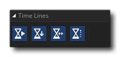

Les timelines sont un mécanisme puissant pour contrôler les événements dans votre jeu, et sont basés sur des «moments», où un «moment» est simplement un simple pas de jeu. Ces chronologies sont généralement créées à partir de l'arbre des ressources de la même manière qu'un objet, c'est-à-dire: vous créez un montage dans l' éditeur de chronologie, puis vous ajoutez du code ou une action DnD™ à chaque fois que vous en avez besoin pour effectuer une action. à effectuer.
Une fois qu'une ressource de montage a été créée, vous pouvez l'arrêter, la démarrer et la manipuler à l'aide des actions suivantes:
| Définir la chronologie de l'instance | |
 | Définir le moment de la chronologie |
| Définir la vitesse de la timeline | |
 | Définir l'état de la chronologie |